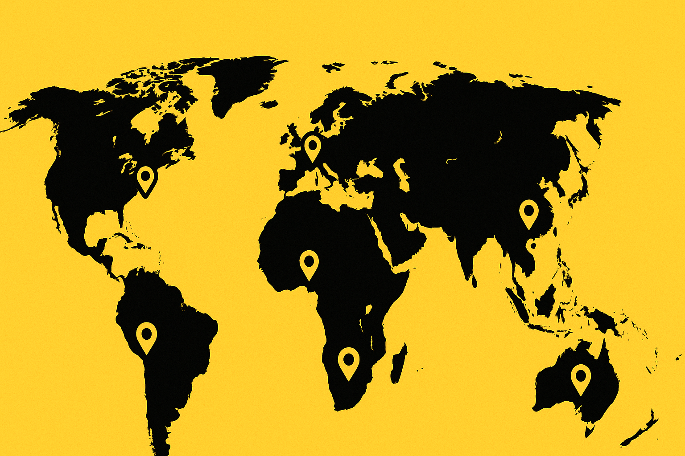

A global storytelling experiment
The Yellow Camera Project
Take it. Film your world. Pass it on.
A roaming fleet of bright yellow cameras drifting from stranger to stranger across the planet.

A global storytelling experiment
Take it. Film your world. Pass it on.
A roaming fleet of bright yellow cameras drifting from stranger to stranger across the planet.